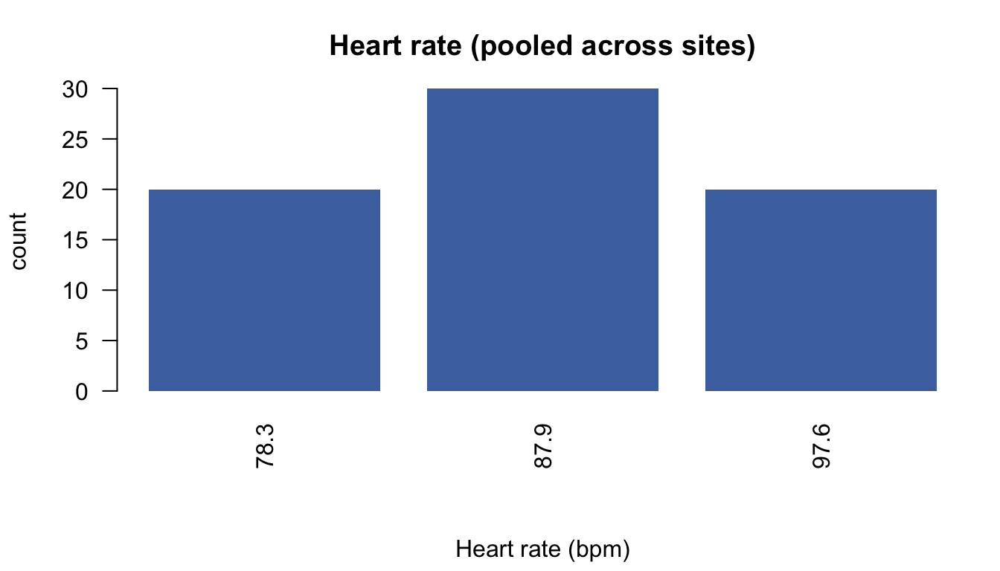

library(DSI)
library(DSOpal)
library(dsBaseClient)
library(dsOMOPClient)Federated OMOP analysis with dsOMOP
A hands-on tutorial — exploring real hospital data across three sites, without the data ever leaving them
Download the R script (.R) Download the source (.Rmd)
Welcome
In this tutorial you will analyse real-world hospital data that lives in three different hospitals at once — and you will do it without ever seeing or downloading a single patient’s record.
The pieces:
- OMOP CDM is a standard shape for health data. Every hospital stores its patients, diagnoses, drugs and lab results in the same tables (
person,condition_occurrence,drug_exposure,measurement, …). Learn it once, use it anywhere. - DataSHIELD is the safety layer. You send commands to each hospital; the hospital runs them on its own data and returns only aggregated, non-disclosive results. Individual rows never travel.
- dsOMOP is the bridge that lets DataSHIELD speak OMOP.
ImportantThe golden rule
You never hold patient-level data on your laptop. Every result is checked by a disclosure filter on each server before it is returned. If a result would describe too few people, the server hides it. This explains much of what you’ll see.
We work with MIMIC (an intensive-care database) throughout this tutorial. You will: connect → explore → learn the recipe for extracting analysis tables → filter at extraction → and finish with a real regression model — all federated across three sites.
1. Connecting to the federation
Describe the three servers and log in (same training login on each, asking for the omop profile), then attach the MIMIC database under the symbol "omop":
builder <- DSI::newDSLoginBuilder()
builder$append(server = "nairobi", url = "https://nairobi.datashield.live",
user = "ethiopia", password = "P@ssw0rd", profile = "omop")
builder$append(server = "douala", url = "https://douala.datashield.live",
user = "ethiopia", password = "P@ssw0rd", profile = "omop")
builder$append(server = "dakar", url = "https://dakar.datashield.live",
user = "ethiopia", password = "P@ssw0rd", profile = "omop")
conns <- DSI::datashield.login(logins = builder$build())
ds.omop.connect(resource = "omop_demo.mimic", symbol = "omop", conns = conns)
Warning
Forgetting profile = "omop" is the #1 beginner mistake — without it the ds.omop.* functions aren’t available. If that happens, log out and rebuild the login with the profile set.
2. Reading the map: tables and columns
Ask what tables exist (the result has one entry per server; the schemas are identical, so we peek at one):
tabs <- ds.omop.tables(symbol = "omop", conns = conns)
show_tbl(head(tabs$nairobi[, c("table_name", "schema_category", "has_person_id")], 12))| table_name | schema_category | has_person_id |
|---|---|---|
| person | CDM | TRUE |
| observation_period | CDM | TRUE |
| visit_occurrence | CDM | TRUE |
| visit_detail | CDM | TRUE |
| condition_occurrence | CDM | TRUE |
| drug_exposure | CDM | TRUE |
| procedure_occurrence | CDM | TRUE |
| device_exposure | CDM | TRUE |
| measurement | CDM | TRUE |
| observation | CDM | TRUE |
| death | CDM | TRUE |
| note | CDM | TRUE |
Inspect a table’s columns:
show_tbl(ds.omop.columns("measurement", symbol = "omop", conns = conns)$nairobi)| column_name | cdm_datatype | db_datatype | concept_role | fk_domain | is_date | is_sensitive | is_blocked |
|---|---|---|---|---|---|---|---|
| measurement_id | integer | bigint | non_concept | FALSE | FALSE | FALSE | |
| person_id | integer | bigint | non_concept | FALSE | FALSE | FALSE | |
| measurement_concept_id | integer | bigint | domain_concept | Measurement | FALSE | FALSE | FALSE |
| measurement_date | date | date | non_concept | TRUE | FALSE | FALSE | |
| measurement_datetime | datetime | timestamp without time zone | non_concept | TRUE | FALSE | FALSE | |
| measurement_time | varchar(10) | text | non_concept | FALSE | FALSE | FALSE | |
| measurement_type_concept_id | integer | bigint | type_concept | Type Concept | FALSE | FALSE | FALSE |
| operator_concept_id | integer | bigint | attribute_concept | Meas Value Operator | FALSE | FALSE | FALSE |
| value_as_number | float | numeric | non_concept | FALSE | FALSE | FALSE | |
| value_as_concept_id | integer | bigint | attribute_concept | Meas Value | FALSE | FALSE | FALSE |
| unit_concept_id | integer | bigint | attribute_concept | Unit | FALSE | FALSE | FALSE |
| range_low | float | numeric | non_concept | FALSE | FALSE | FALSE | |
| range_high | float | numeric | non_concept | FALSE | FALSE | FALSE | |
| provider_id | integer | bigint | non_concept | FALSE | FALSE | FALSE | |
| visit_occurrence_id | integer | bigint | non_concept | FALSE | FALSE | FALSE | |
| visit_detail_id | integer | bigint | non_concept | FALSE | FALSE | FALSE | |
| measurement_source_value | varchar(50) | text | non_concept | FALSE | TRUE | TRUE | |
| measurement_source_concept_id | integer | bigint | source_concept | Measurement | FALSE | TRUE | TRUE |
| unit_source_value | varchar(50) | text | non_concept | FALSE | TRUE | TRUE | |
| value_source_value | varchar(50) | text | non_concept | FALSE | TRUE | TRUE |
How big is a table? ds.omop.table.stats() returns safe row/patient counts:
st <- ds.omop.table.stats("condition_occurrence", symbol = "omop", conns = conns)$per_site$nairobi
show_tbl(data.frame(rows = st$rows, persons = st$persons))| rows | persons |
|---|---|
| 6185 | 35 |
TipWhere would you look for…?
diagnoses → condition_occurrence; medications → drug_exposure; lab values / vital signs → measurement; social facts → observation. Every one has a person_id linking a patient’s records.
3. Who are these patients?
Gender lives in person.gender_concept_id. Rank its values, pooled across all three sites:
g <- ds.omop.concept.prevalence("person", concept_col = "gender_concept_id",
scope = "pooled", symbol = "omop", conns = conns)
show_tbl(g$pooled)| concept_id | n_persons | concept_name | suppressed |
|---|---|---|---|
| 8507 | 55 | MALE | FALSE |
| 8532 | 35 | FEMALE | FALSE |
ImportantConcepts translate themselves
You got MALE / FEMALE, not codes like 8507 / 8532. Any *_concept_id column is automatically translated to readable labels — concept translation is on by default everywhere in dsOMOP. You never memorise codes.
NoteA real-world aside: de-identification
Intensive-care data is de-identified by shifting dates. For this teaching dataset the dates have been re-anchored so ages are realistic, but remember: in real clinical data, dates are often deliberately distorted while ages and time-intervals are preserved. Always derive age from the data, never assume the calendar year means “now”. (We’ll get proper age from the recipe in Section 7.)
4. Discovering what was recorded
The most common diagnoses (ranked by distinct patients):
pc <- ds.omop.concept.prevalence("condition_occurrence", metric = "persons",
top_n = 10, scope = "pooled", symbol = "omop", conns = conns)
show_tbl(pc$pooled)| concept_id | n_persons | concept_name | suppressed |
|---|---|---|---|
| 4145513 | 85 | ECG: sinus rhythm | FALSE |
| 4140598 | 60 | ECG: sinus tachycardia | FALSE |
| 433753 | 55 | Alcohol abuse | FALSE |
| 320128 | 45 | Essential hypertension | FALSE |
| 432867 | 45 | Hyperlipidemia | FALSE |
| 4008576 | NA | Diabetes mellitus without complication | TRUE |
| 439777 | NA | Anemia | TRUE |
| 440383 | NA | Depressive disorder | TRUE |
| 81902 | NA | Urinary tract infectious disease | TRUE |
| 313217 | NA | Atrial fibrillation | TRUE |
Rows with suppressed = TRUE describe too few patients to report safely — the disclosure filter at work.
Don’t know a concept’s code? Search for it:
show_tbl(ds.omop.concept.search("hypertension", domain = "Condition",
limit = 5, symbol = "omop", conns = conns))
|
|
|
And look up codes you already have:
show_tbl(ds.omop.concept.lookup(c(320128, 432867, 3027018),
symbol = "omop", conns = conns))
|
|
|
TipYour turn
Find the concept_id for a condition that interests you with ds.omop.concept.search(..., domain = "Condition").
5. A numeric variable: heart rate
Measurements store a number in value_as_number. Take heart rate (concept_id = 3027018) and get a safe statistical summary:
cs <- ds.omop.column.stats("measurement", "value_as_number", concept_id = 3027018,
scope = "pooled", symbol = "omop", conns = conns)
show_tbl(cs$pooled)
|
|
|
Important
You get n, mean, sd — but not the true min/max (exact extremes could identify a patient). When you need a range, use the disclosure-safe 5th–95th-percentile band.
A picture of the distribution. ds.omop.value.histogram() returns disclosure-safe bins (per site); we combine the sites’ bin counts and draw them:
h <- ds.omop.value.histogram("measurement", value_col = "value_as_number",
concept_id = 3027018, symbol = "omop", conns = conns)
bins <- do.call(rbind, h$per_site) # stack the three sites' bins
bins <- subset(bins, !is.na(count)) # drop suppressed bins
bins <- aggregate(count ~ bin_start, data = bins, FUN = sum)
bins <- bins[order(bins$bin_start), ]
barplot(bins$count, names.arg = round(bins$bin_start), las = 2,
col = "#4C72B0", border = NA,
xlab = "Heart rate (bpm)", ylab = "records",
main = "Heart rate across the federation")
TipWhat shape is it?
Roughly symmetric and unimodal, centred near the mean. Compare that with a skewed lab like serum creatinine (3016723), where a long right tail pulls the mean above the median.
6. A categorical variable: heart rhythm
Some measurements store a category in value_as_concept_id. Heart rhythm (concept_id = 3022318) is the classic example. Count how often each value occurs:
rh <- ds.omop.value.counts("measurement", "value_as_concept_id",
concept_id = 3022318, symbol = "omop", conns = conns)
show_tbl(rh$pooled)
ImportantTwo kinds of measurement
A numeric measurement (heart rate value) → summarise with mean / sd / histogram. A categorical one (heart rhythm) → count each level. And again the coded values came back as readable labels (Sinus rhythm, Atrial fibrillation, …).
7. The recipe: building an analysis table
Single aggregates are great for exploring, but to model anything we need a table with one row per patient and one column per variable. In dsOMOP you describe that table with a recipe and the servers build it for you — still without sending any rows.
A recipe has four elements:
| Element | What it is |
|---|---|
| variables | the columns you want — each an omop_variable(...) (a person column, or something built from a concept_id) |
| filters | optional row/population restrictions applied during extraction (Section 8) |
| format | how each variable is summarised per patient: "sex_mf", "binary" (0/1 presence), "count", "mean", "sd", … (and omop_variable_age() builds age) |
| output | omop_output(name, type = "wide") — "wide" means one row per patient, exactly what a model needs |
Let’s build a person-level table mixing all the variable types we’ve met — a categorical (sex), two numerics (age, mean heart_rate) and two binary condition flags (hypertension = 320128, hyperlipidemia = 432867):
rec <- omop_recipe(
variables = list(
omop_variable(table = "person", column = "gender_concept_id", format = "sex_mf", name = "sex"),
omop_variable_age(name = "age"),
omop_variable(table = "measurement", concept_id = 3027018, format = "mean", name = "heart_rate"),
omop_variable(table = "condition_occurrence", concept_id = 320128, format = "binary", name = "hypertension"),
omop_variable(table = "condition_occurrence", concept_id = 432867, format = "binary", name = "hyperlipidemia")
),
outputs = omop_output(name = "study", type = "wide")
)First, preview — a server-side dry run that reports the expected columns and a banded patient count, without building anything:
recipe_preview(rec, symbol = "omop", conns = conns)#> $nairobi
#> $nairobi$validation
#> $nairobi$validation$valid
#> [1] TRUE
#>
#> $nairobi$validation$errors
#> character(0)
#>
#> $nairobi$validation$warnings
#> [1] "Output 'study', table 'measurement': columns not found: 3027018, list(heart_rate = list(type = \"mean_value\", concept_set = 3027018, value_column = \"value_as_number\", name = \"heart_rate\"))"
#> [2] "Output 'study', table 'condition_occurrence': columns not found: list(320128, 432867), list(hypertension = list(type = \"boolean\", concept_set = 320128, name = \"hypertension\"), hyperlipidemia = list(type = \"boolean\", concept_set = 432867, name = \"hyperlipidemia\"))"
#>
#> $nairobi$validation$available_tables
#> [1] "person" "observation_period" "visit_occurrence"
#> [4] "visit_detail" "condition_occurrence" "drug_exposure"
#> [7] "procedure_occurrence" "device_exposure" "measurement"
#> [10] "observation" "death" "note"
#> [13] "note_nlp" "specimen" "fact_relationship"
#> [16] "location" "care_site" "provider"
#> [19] "payer_plan_period" "cost" "condition_era"
#> [22] "drug_era" "dose_era" "cdm_source"
#> [25] "metadata" "concept" "vocabulary"
#> [28] "domain" "concept_class" "concept_relationship"
#> [31] "relationship" "concept_synonym" "concept_ancestor"
#> [34] "source_to_concept_map" "drug_strength" "cohort_definition"
#> [37] "achilles_performance" "attribute_definition" "achilles_analysis"
#> [40] "achilles_results" "achilles_results_dist"
#>
#>
#> $nairobi$outputs
#> $nairobi$outputs$study
#> $nairobi$outputs$study$type
#> [1] "person_level"
#>
#> $nairobi$outputs$study$tables
#> $nairobi$outputs$study$tables$measurement
#> $nairobi$outputs$study$tables$measurement$columns
#> character(0)
#>
#> $nairobi$outputs$study$tables$measurement$missing_columns
#> [1] "3027018"
#> [2] "list(heart_rate = list(type = \"mean_value\", concept_set = 3027018, value_column = \"value_as_number\", name = \"heart_rate\"))"
#>
#> $nairobi$outputs$study$tables$measurement$n_persons
#> [1] 35
#>
#> $nairobi$outputs$study$tables$measurement$n_persons_banded
#> [1] TRUE
#>
#> $nairobi$outputs$study$tables$measurement$band_width
#> [1] 5
#>
#> $nairobi$outputs$study$tables$measurement$disclosive
#> [1] FALSE
#>
#>
#> $nairobi$outputs$study$tables$condition_occurrence
#> $nairobi$outputs$study$tables$condition_occurrence$columns
#> character(0)
#>
#> $nairobi$outputs$study$tables$condition_occurrence$missing_columns
#> [1] "list(320128, 432867)"
#> [2] "list(hypertension = list(type = \"boolean\", concept_set = 320128, name = \"hypertension\"), hyperlipidemia = list(type = \"boolean\", concept_set = 432867, name = \"hyperlipidemia\"))"
#>
#> $nairobi$outputs$study$tables$condition_occurrence$n_persons
#> [1] 35
#>
#> $nairobi$outputs$study$tables$condition_occurrence$n_persons_banded
#> [1] TRUE
#>
#> $nairobi$outputs$study$tables$condition_occurrence$band_width
#> [1] 5
#>
#> $nairobi$outputs$study$tables$condition_occurrence$disclosive
#> [1] FALSE
#>
#>
#>
#>
#>
#> $nairobi$band_width
#> [1] 5
#>
#>
#> $douala
#> $douala$validation
#> $douala$validation$valid
#> [1] TRUE
#>
#> $douala$validation$errors
#> character(0)
#>
#> $douala$validation$warnings
#> [1] "Output 'study', table 'measurement': columns not found: 3027018, list(heart_rate = list(type = \"mean_value\", concept_set = 3027018, value_column = \"value_as_number\", name = \"heart_rate\"))"
#> [2] "Output 'study', table 'condition_occurrence': columns not found: list(320128, 432867), list(hypertension = list(type = \"boolean\", concept_set = 320128, name = \"hypertension\"), hyperlipidemia = list(type = \"boolean\", concept_set = 432867, name = \"hyperlipidemia\"))"
#>
#> $douala$validation$available_tables
#> [1] "person" "observation_period" "visit_occurrence"
#> [4] "visit_detail" "condition_occurrence" "drug_exposure"
#> [7] "procedure_occurrence" "device_exposure" "measurement"
#> [10] "observation" "death" "note"
#> [13] "note_nlp" "specimen" "fact_relationship"
#> [16] "location" "care_site" "provider"
#> [19] "payer_plan_period" "cost" "condition_era"
#> [22] "drug_era" "dose_era" "cdm_source"
#> [25] "metadata" "concept" "vocabulary"
#> [28] "domain" "concept_class" "concept_relationship"
#> [31] "relationship" "concept_synonym" "concept_ancestor"
#> [34] "source_to_concept_map" "drug_strength" "cohort_definition"
#> [37] "attribute_definition" "achilles_analysis" "achilles_performance"
#> [40] "achilles_results" "achilles_results_dist"
#>
#>
#> $douala$outputs
#> $douala$outputs$study
#> $douala$outputs$study$type
#> [1] "person_level"
#>
#> $douala$outputs$study$tables
#> $douala$outputs$study$tables$measurement
#> $douala$outputs$study$tables$measurement$columns
#> character(0)
#>
#> $douala$outputs$study$tables$measurement$missing_columns
#> [1] "3027018"
#> [2] "list(heart_rate = list(type = \"mean_value\", concept_set = 3027018, value_column = \"value_as_number\", name = \"heart_rate\"))"
#>
#> $douala$outputs$study$tables$measurement$n_persons
#> [1] 25
#>
#> $douala$outputs$study$tables$measurement$n_persons_banded
#> [1] TRUE
#>
#> $douala$outputs$study$tables$measurement$band_width
#> [1] 5
#>
#> $douala$outputs$study$tables$measurement$disclosive
#> [1] FALSE
#>
#>
#> $douala$outputs$study$tables$condition_occurrence
#> $douala$outputs$study$tables$condition_occurrence$columns
#> character(0)
#>
#> $douala$outputs$study$tables$condition_occurrence$missing_columns
#> [1] "list(320128, 432867)"
#> [2] "list(hypertension = list(type = \"boolean\", concept_set = 320128, name = \"hypertension\"), hyperlipidemia = list(type = \"boolean\", concept_set = 432867, name = \"hyperlipidemia\"))"
#>
#> $douala$outputs$study$tables$condition_occurrence$n_persons
#> [1] 25
#>
#> $douala$outputs$study$tables$condition_occurrence$n_persons_banded
#> [1] TRUE
#>
#> $douala$outputs$study$tables$condition_occurrence$band_width
#> [1] 5
#>
#> $douala$outputs$study$tables$condition_occurrence$disclosive
#> [1] FALSE
#>
#>
#>
#>
#>
#> $douala$band_width
#> [1] 5
#>
#>
#> $dakar
#> $dakar$validation
#> $dakar$validation$valid
#> [1] TRUE
#>
#> $dakar$validation$errors
#> character(0)
#>
#> $dakar$validation$warnings
#> [1] "Output 'study', table 'measurement': columns not found: 3027018, list(heart_rate = list(type = \"mean_value\", concept_set = 3027018, value_column = \"value_as_number\", name = \"heart_rate\"))"
#> [2] "Output 'study', table 'condition_occurrence': columns not found: list(320128, 432867), list(hypertension = list(type = \"boolean\", concept_set = 320128, name = \"hypertension\"), hyperlipidemia = list(type = \"boolean\", concept_set = 432867, name = \"hyperlipidemia\"))"
#>
#> $dakar$validation$available_tables
#> [1] "person" "observation_period" "visit_occurrence"
#> [4] "visit_detail" "condition_occurrence" "drug_exposure"
#> [7] "procedure_occurrence" "device_exposure" "measurement"
#> [10] "observation" "death" "note"
#> [13] "note_nlp" "specimen" "fact_relationship"
#> [16] "location" "care_site" "provider"
#> [19] "payer_plan_period" "cost" "condition_era"
#> [22] "drug_era" "dose_era" "cdm_source"
#> [25] "metadata" "concept" "vocabulary"
#> [28] "domain" "concept_class" "concept_relationship"
#> [31] "relationship" "concept_synonym" "concept_ancestor"
#> [34] "source_to_concept_map" "drug_strength" "cohort_definition"
#> [37] "attribute_definition" "achilles_analysis" "achilles_performance"
#> [40] "achilles_results" "achilles_results_dist"
#>
#>
#> $dakar$outputs
#> $dakar$outputs$study
#> $dakar$outputs$study$type
#> [1] "person_level"
#>
#> $dakar$outputs$study$tables
#> $dakar$outputs$study$tables$measurement
#> $dakar$outputs$study$tables$measurement$columns
#> character(0)
#>
#> $dakar$outputs$study$tables$measurement$missing_columns
#> [1] "3027018"
#> [2] "list(heart_rate = list(type = \"mean_value\", concept_set = 3027018, value_column = \"value_as_number\", name = \"heart_rate\"))"
#>
#> $dakar$outputs$study$tables$measurement$n_persons
#> [1] 40
#>
#> $dakar$outputs$study$tables$measurement$n_persons_banded
#> [1] TRUE
#>
#> $dakar$outputs$study$tables$measurement$band_width
#> [1] 5
#>
#> $dakar$outputs$study$tables$measurement$disclosive
#> [1] FALSE
#>
#>
#> $dakar$outputs$study$tables$condition_occurrence
#> $dakar$outputs$study$tables$condition_occurrence$columns
#> character(0)
#>
#> $dakar$outputs$study$tables$condition_occurrence$missing_columns
#> [1] "list(320128, 432867)"
#> [2] "list(hypertension = list(type = \"boolean\", concept_set = 320128, name = \"hypertension\"), hyperlipidemia = list(type = \"boolean\", concept_set = 432867, name = \"hyperlipidemia\"))"
#>
#> $dakar$outputs$study$tables$condition_occurrence$n_persons
#> [1] 40
#>
#> $dakar$outputs$study$tables$condition_occurrence$n_persons_banded
#> [1] TRUE
#>
#> $dakar$outputs$study$tables$condition_occurrence$band_width
#> [1] 5
#>
#> $dakar$outputs$study$tables$condition_occurrence$disclosive
#> [1] FALSE
#>
#>
#>
#>
#>
#> $dakar$band_width
#> [1] 5Then execute — this builds the table on each server. We map the output named study to a server-side symbol M:
recipe_execute(rec, out = c(study = "M"), symbol = "omop", conns = conns)Then check what you downloaded — never trust a table you haven’t inspected:
ds.colnames("M", datasources = conns)#> $nairobi
#> [1] "person_id" "heart_rate" "hypertension" "hyperlipidemia"
#> [5] "sex" "age"
#>
#> $douala
#> [1] "person_id" "heart_rate" "hypertension" "hyperlipidemia"
#> [5] "sex" "age"
#>
#> $dakar
#> [1] "person_id" "heart_rate" "hypertension" "hyperlipidemia"
#> [5] "sex" "age"ds.dim("M", datasources = conns)#> $`dimensions of M in nairobi`
#> [1] 35 6
#>
#> $`dimensions of M in douala`
#> [1] 25 6
#>
#> $`dimensions of M in dakar`
#> [1] 40 6
#>
#> $`dimensions of M in combined studies`
#> [1] 100 6# numeric: a summary; categorical/binary: frequency tables
ds.summary("M$age", datasources = conns)[[1]][["quantiles & mean"]]#> 5% 10% 25% 50% 75% 90% 95% Mean
#> 40.90000 48.40000 54.00000 65.00000 78.50000 88.00000 90.90000 65.88571tab_sex <- ds.table("M$sex", datasources = conns)$output.list[["TABLES.COMBINED_all.sources_counts"]]#>
#> Data in all studies were valid
#>
#> Study 1 : No errors reported from this study
#> Study 2 : No errors reported from this study
#> Study 3 : No errors reported from this studyshow_tbl(as.data.frame(tab_sex))| tab_sex | |
|---|---|
| F | 43 |
| M | 57 |
| NA | 0 |
tab_htn <- ds.table("M$hypertension", datasources = conns)$output.list[["TABLES.COMBINED_all.sources_counts"]]#>
#> Data in all studies were valid
#>
#> Study 1 : No errors reported from this study
#> Study 2 : No errors reported from this study
#> Study 3 : No errors reported from this studyshow_tbl(as.data.frame(tab_htn))| tab_htn | |
|---|---|
| 0 | 47 |
| 1 | 53 |
| NA | 0 |
8. Filtering at extraction
Often you only want a subpopulation. The cleanest way is to filter while extracting — add a filters element to the recipe so the servers only ever build the rows you asked for. Here we keep only patients aged 65+:
rec_old <- omop_recipe(
variables = list(
omop_variable(table = "person", column = "gender_concept_id", format = "sex_mf", name = "sex"),
omop_variable_age(name = "age"),
omop_variable(table = "condition_occurrence", concept_id = 320128, format = "binary", name = "hypertension")
),
filters = list(elderly = omop_filter_age(min = 65)),
outputs = omop_output(name = "study", type = "wide")
)
recipe_execute(rec_old, out = c(study = "E"), symbol = "omop", conns = conns)Check the filter did what you meant — the minimum age should now be 65, and the cohort smaller:
ds.dim("E", datasources = conns)#> $`dimensions of E in nairobi`
#> [1] 18 4
#>
#> $`dimensions of E in douala`
#> [1] 12 4
#>
#> $`dimensions of E in dakar`
#> [1] 25 4
#>
#> $`dimensions of E in combined studies`
#> [1] 55 4ds.summary("E$age", datasources = conns)[[1]][["quantiles & mean"]]#> 5% 10% 25% 50% 75% 90% 95% Mean
#> 65.00000 67.10000 71.25000 78.50000 86.50000 90.90000 93.30000 78.44444
Note
Allowed filters are the safe ones — omop_filter_age(), ranges (>=, >, <=, <, between), and membership — because they can only ever shrink a population. The per-patient gate still runs on the result, so a filter can never bypass suppression.
9. A real model: what predicts hypertension?
We have a person-level table M. Let’s ask a genuine question: does hypertension become more likely with age, and does sex or having hyperlipidemia matter? A logistic regression (family = "binomial"), fitted jointly across the three hospitals:
fit <- ds.glm(
formula = "M$hypertension ~ M$age + M$sex + M$hyperlipidemia",
family = "binomial", datasources = conns)co <- fit$coefficients
res <- data.frame(
term = rownames(co),
OR = round(co[, "P_OR"], 2),
CI_low = round(co[, "low0.95CI.P_OR"], 2),
CI_high = round(co[, "high0.95CI.P_OR"], 2),
p_value = signif(co[, "p-value"], 3),
row.names = NULL)
show_tbl(res)| term | OR | CI_low | CI_high | p_value |
|---|---|---|---|---|
| (Intercept) | 0.08 | 0.01 | 0.38 | 0.01380 |
| M\(age | 1.05| 1.01| 1.08| 0.00495| |M\)sexM | 0.42 | 0.17 | 1.01 | 0.05360 |
| M$hyperlipidemia | 1.34 | 0.53 | 3.38 | 0.54200 |
ImportantReading the result (the
OR column = odds ratio)
- age is a clear, significant predictor (odds of hypertension rise a few percent per year of age) — clinically sensible.
- sex and hyperlipidemia are not significant here (p well above 0.05, confidence intervals crossing 1).
A real study gives a mixed answer like this — one clear effect and some nulls. That’s honest science, produced without ever touching a patient record. (On a ~100-patient demo, power is limited; the message is the method, not a definitive clinical claim.)
DSI::datashield.logout(conns)Where to go next
You now have the full toolkit: connect → explore → summarise (numeric & categorical) → recipe (variables / filters / format / output) → preview → execute → check → model, all under a disclosure filter that kept every patient private.
NoteComing next
A second vignette takes these exact tools to a larger dataset (GiBleed, ~2,700 patients) to run a more powerful study — and the companion exercise sheet lets you practise everything here on new variables and a new model.